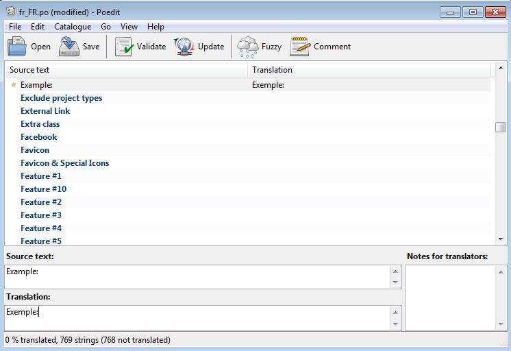

Documentation Sitemap
Always prefer to check out the Online Documentation which is always updated to the latest features! Online Documentation
Theme Installation & Updates
- Installing Wordpress
- Theme Installation through Wordpress
- Child Theme Installation (Mandatory)
- Installation Through FTP
- Plugin Installation
- Update theme via Themeforest
Demo Content
Setting up your Theme
- Set up a static Front Page / Posts page
- Colors & Typography
- Miscellaneous
- Header Layout & Display
- Add your logo
- Top Toolbar
- Footer
- Head Panel
- Single Posts Options
- Single Pages Options
- Add a slider
- 404 page
- Set up a Contact page
- Twitter Feed
- Mailchimp Integration
- Create the main menu
- Create One Page Scrolling Theme
- Archive & Other Options
- Blog Options
- WoocCommerce Settings
Cleanstart Overview
Cleanstart is a multipurpose but mainly business oriented Wordpress Theme, built to serve as a foundation for your web projects. The Design is based on fine typography and large photography with post-flat UI approach that will add uniqueness to your project. It is based on Twitter Bootstrap (check out BS excellent documentation), the front-end development framework with a steep learning curve that changes the way you develop sites. Cleanstart lets you build your pages and posts with a Visual Builder and a great collection of Custom Shortcodes that offers flexibility and pixel-perfect design.
To use the theme you have to be familiar with Wordpress. The demo is self-explanatory and you can easily study the pages to discover how to customize them to your needs. This documentation covers some basics to help you get started...
Theme Installation & Updates
Installing WordPress (if you haven't already...)
WordPress is well-known for the easy installation. Under most circumstances installing WordPress is a very simple process and takes less than five minutes to be completed. Many web hosts now are offering tools (e.g. Bluehost, mediatemple) for automatic installation. However, if you wish to install WordPress by yourself, read about the Famous 5 Minutes Installation.
Below you can find some links about WordPress Installation
Common WordPress Installation Issues
- Things to Know Before You Begin Installing WordPress
- Detailed Instructions
- Common Installation Problems
- WordPress in Your Language
- Installing Multiple Blogs
- How to Install on your own Computer
- Easy 5 Minutes WordPress Installation on Windows
- Getting Started with WordPress
Theme Installation through WordPress (recommended)
When you've downloaded CleanStart Theme, unzip the main zip file and you'll find the following:
- documentation - folder containing all documentation HTML files & licences
- cleanstart.zip - Parent theme installation files (ready to use)
- cleanstart-child.zip - Child theme installation files (ready to use)
Now what? Follow the next steps to install Cleanstart as a WordPress Theme.
- Log in to Administration Panel and go to Appearance > Themes
- Select Add New and click Upload
- Click Choose File button and locate your cleanstart.zip file that you previously downloaded on your computer *
- Click Install Now
- After CleanStart is installed, locate it and click Activate. If you consider installing the child theme ( which is strongly recommended ), then there is no need to activate the parent theme in this step.
* Note You should not upload the whole item you have downloaded from Themeforest because you will get an error of broken stylesheet file. Instead locate the CleanStart.zip file inside the main file you downloaded.
Warning: while installing your theme through WordPress admin, you may encounter an error message saying : “are you sure that you want to do this?”. This is mainly due to your hosting php settings. CleanStart theme zip file is roughly around 6MB and in some hosting configurations the default limit for max upload is 2MB. To solve this problem you should either increase your maximum upload limit (at least to 8MB) on your hosting admin panel, or ask your host to do it for you. This is a common request and they should be able to assist you.
Child Theme Installation (Strongly Recommended!)
Cleanstart comes with a child theme included in the theme package. Installing a Child Theme is almost the same as installing any other WordPress theme. The only difference is that you need both the parent theme, and the child theme uploaded to your WordPress theme directory. So, follow the steps described above once more, but now upload cleanstart_child.zip instead.
We focus on using the latest web standards and practices regarding WordPress theme development.
We strongly recommend our customers to install the child theme in order to ensure hassle-free updates.
Read all about Child Themes!
Installation Through FTP
If for some reason you had problems installing the theme through wordpress then you can check out the following method:
- Download Cleanstart theme from ThemeForest and unzip the main zip file
- Locate cleanstart.zip and extract/unzip its contents
- Use an FTP client (for example FileZilla) to access your host web server
- Transfer your unzipped theme folder to your server in the wp-content/themes
- When the theme is uploaded, you have to activate it. Go to Appearance > Themes and activate Cleanstart theme.
- If you consider installing the child theme ( which is strongly recommended ), then repeat the FTP procedure for cleanstart-child.zip file and activate this instead.
Plugin Installation
The following plugins are bits of software that extend the functionality of Cleanstart theme and are included in the theme package. When you install Cleanstart, you will get a notification message in your WordPress admin informing you about the required and recommended plugins. You have to install them. For those who are not familiar with plugin management, please check WordPress Codex > Managing Plugins reference
-
Plethora Framework (mandatory)
This is Plethora's theme framework plugin. Please make sure that it is always installed & activated, otherwise your theme will not be functional.
-
Visual Composer (mandatory)
Visual Composer allows you to edit your content using an enhanced page builder.
You are expected to use the version included in the package, as it is configured to work seamlessly with the theme.
Please, note that we do not offer compliance with any licensed version of Visual Composer plugin other than the one included in Cleanstart's Package. - Contact Form 7 ( recommended ).
Contact Form 7 can manage multiple contact forms. You can also customize the form and the mail contents flexibly with simple markup. Cleanstart design is compatible with any form created using Contact Form 7.
Note that for core functionality issues (non related to design), you should refer to the plugin documentation or contact the author directly.
Please, be careful. You have to install and activate Contact Form 7 before importing content! - WP Envato Plugin ( recommended )
- Activate the plugin after install by clicking the "Acitvate Plugin" link that's displayed
- Navigate to WP-Admin > Envato Toolkit
- Type your Envato Marketplace Username (Themeforest login name) and Secret API Key
- Click "Save Settings".
- Once the settings are saved, you will see a listing of all you Themeforest available downloads.
Envato plugin, provides a direct connection with your Envato account.
Update theme
Cleanstart will be regularly updated to keep up with wordpress updates. So if you get notified about an update, follow the instructions :
The first and most important step to update your theme is to BACKUP your site and Database. There are plenty of ways of doing that, you can start from here: WordPress Backups
- Login into your Themeforest account, go to Dashboad > downloads and download the theme into your computer
- Install an FTP program if you already do not have one (Filezilla is free)
- Retrieve your FTP login information from your hosting admin panel and login into your hosting via FTP
- Unzip the item main file
- Locate theme.zip (e.g. : CleanStart.zip) and unzip it. Make sure your unzipping software does not create extra directory with the same name nested into each other.
- Locate the theme main folder on your FTP program ( should be something like: "YOUR_HOSTING_ROOT/YOUR_SUBDIRECTORY/wp-content/themes/" ) and drag and drop the local version in it. FTP program will give a warning that there is already a directory with the same name. Choose "replace all".
- It will take from 2 to 10 minutes to replace all files. When you finish, login into your wordpress dashboard, go to Appearance > Themes, and on the "Cleanstart Parent Theme Screenshot" you will verify the new version. Child theme doesn't need to be updated unless you made no changes to it and want the new cool screenshot.
- Finally, a TGM notice will appear on top of your administration page to update the "Plethora Themes Framework" plugin. Update it by clicking on the notice and clicking "Update" and "Activate" under the "Plethora Themes Framework" listing in the list that appears. Or, on the "Themes" page, click to view Cleanstart Theme Details and in the popup window, click "Update Plugins" button on the bottom.
Demo Content
Now that you have installed your theme you should start setting it up! One way of going, is putting some content first. Let us tell you this: There is not an one-click-install of the Demo Content yet! So, you either...
Import demo content from file
Below you can find a step by step guide, taken from the Importing Content page from the WordPress website.
- Log into your site as an administrator.
- Go to Administration > Tools > Import
- Choose WordPress from the list, install and activate the theme.
- Run Importer
- Click on "Choose File" and browse to select the .xml file of your choice from the "Demo Content" folder of your downloaded package.
- Click "Upload file and Import"
- You will be asked to map the authors in this export file to users on the blog.
For each author, you may choose to map to an existing user on the blog or to create a new user. - You will then have the choice to import attachments, so click on the Download and import file attachments box and then click "Submit"
- Posts, Pages, Projects, and Menus are imported. So be patient and do not refresh the page until the All done. Have fun! message appears.
- After that, you will need to
- Go to Settings > Reading and set "Front page displays" to "A static page (select below)" and select "HOME" for Front Page and "BLOG" for Posts Page
- Go to Appearance > Menus and check "Primary Navigation" for the "Main menu" location and save.
- You also have to go to Appearance > Widgets and setup Sidebars and Widgets. This is a limitation of WordPress’ import system.
- Enjoy Cleanstart!
Please be patient while WordPress imports all the content.
Do not refresh the page until the All done. Have fun! message appears.
or Use Visual Composer Templates
Apparently, this is the most convenient demo content importing method. We use Visual Composer's functionality to import page templates directly on the editor. To import one of the default demo page templates, follow the instructions :
- Log in to your site administration
- Go to Pages > New
- Fill the title field with the name of the page ( i.e. About Us ).
- Right after the title field, click on Backend Editor button.
- On VC Backend Editor view, click on the templates icon (3rd icon on your left).
- On the Templates pop up window, click on 'Default Templates' tab.
- Now you should see a list with all default templates. Click the one you need ( i.e. 'About Us Page' ). After a couple of seconds, you will see the editor on the back filled up with content boxes.
- Close the 'Templates' popup window and click on the 'Publish' button on your right to save your page...and that was all!
or Import Individual Pages
If you don't wish to import all of our demo content, you can import individual pages.Below you can find the demo code for all the individual pages on our demo, made with shortcodes. To copy one of our demo pages, follow the instructions :
- Click the Link of the page you want to copy, select the text and copy it.
- Add a new page in your WordPress admin.
- Click on the TEXT tab (not the VISUAL tab) and paste the content into the editor's field.
Publish the page and you’re ready!
Setting up your Theme
Set up a static Front Page / Posts page
Administration > Settings > Reading > Front Page Displays
By default, WordPress displays latest posts in the Front Page. You should change this behavior by setting up a different static Front Page / Posts Page instead:
- Add a new page to use it as Front Page. You should give a distinctive name ( e.g. Home or Welcome )
- Add another new page to use it as Posts Page. You should give a distinctive name ( e.g. Blog or News ). This page will be select as your static blog page.
Important note: for the moment, you should not make any page configuration, since the options given here will change right after you set it as your static blog page on the following steps. - Go to Administration > Settings > Reading > Front Page Displays > Front Page
- Change your Front page display to a static page
- Select the first page you created for Front Page
- Select the second page you created for Posts Page
- Click the Save Changes button...you are ready!
Important note: now, you have 2 ways to setup your blog options. You can go directly to the static Posts Page or you can go to Theme Settings panel > Blog ( check Blog Options section below for further instructions ).
Colors & Typography
Body & Headings
Administration > Theme Settings > General > Body & Headings
In this section you can set Body Background Color, Body Text Color and Body Link Color using a simple color picker!
Have in mind that Cleanstart's design looks perfect with any light background color.
You can also choose different font style for Headings and Body Text. You could select between a Standard or a Google Font family, Standard font families are usually pre-installed on users machines (PC, Mac, etc.), while Google Fonts are loaded automatically from Google CDN. Google Fonts support different subsets, depending on the website language.
Each Google Font family supports specific language subsets that are refreshed automatically on font selection.
Latin is the default subset for all Google Fonts
Headings & Buttons Text Transform
Select uppercase transformation or none for headings and buttons texts
Skin Coloured Sections
Administration > Theme Settings > General > Skin Coloured Sections
The skin color is the basic color shade for several design elements and affects the overall theme's look and feel, you can set different colors for Skin Sections Background Color, Skin Sections Text Color and Skin Sections Link Color.
Usually, the skin color selection is in line with the company/organization logo.
Dark Coloured Sections
Administration > Theme Settings > General > Dark Coloured Sections
On this section, you can choose different colors for your Call to Action Shortcode.
Background Color, Text Color, and Link Color can be easily set using a color picker.
Header Colors & Typography
Administration > Theme Settings > Header > Colors & Typography
On this group of settings you can set your menu layout.
Menu Background Color, Background Transparency and Link Color included.
Footer Main Section
Administration > Theme Settings > Footer > Main Section
Footer Background color, Text color and Link color can be seted on this Settings group.
Miscellaneous
Back to top
Administration > Theme Settings > Miscellaneous > Back to Top
On this section you can choose to Enable or Disable Back to Top button
TextRotator Animation Speed
Administration > Theme Settings > Miscellaneous > TextRotator Animation Speed
If you wish to change the speed of the Text Rotator effect (found on the Call to Action shortcode) you need to set the TextRotator Animation Speed option and change its value to the number of milliseconds you want the effect to take place.
You can set a word(s) rotation on any text using the following pattern:
<span class="rotate">words_to_rotate1, words_to_rotate2, words_to_rotate3</span>
Text Shadows
Administration > Theme Settings > General > Miscellaneous > Text Shadows
Enable or disable text shadows that appears at the following Captions: Sliders, Headers Full Image, Newsletter, Parallax, Call to Action
Header Layout & Display
Administration > Theme Settings > Header > Layout & Display
On this panel you can set the header layout choosing from the dropdown list that appears, to enable or disable sticky header and hide or display side corners. Have in mind that this options can be overridden on page/post settings.
We recommend you to disable Admin Toolbar during site setup!
Users > Select User > Uncheck "Show Toolbar when viewing site"
Add your logo
Administration > Theme Settings > Header > Logo
Add your logo Following the steps below.
- Upload your logo
- Choose one of the 3 available layouts from the Logo Layout select box.
- Set your logo title
- Set image size
- Set logo container width/height
- Set logo title container size
- Set logo container padding
- Click Save Changes
Top Toolbar
Administration > Theme Settings > Header > Top Toolbar
In this section you can select to hide or display the top toolbar. This toolbar has a menu on the left that you can setup like all other menus and text on the right that you can fill in. Once you select to display the toolbar from the settings of a page or the general settings, all the options will appear.
Footer
Administration > Theme Settings > Footer
- Choose footer area layout
- Hide or Display Side Corners
- Hide or Display Footer info bar
- Set info bar container height
- Type your copyright text
- Type your Credits text
- Enable or Disable Twitter feed section
Head Panel
Administration > Theme Settings > Head Panel
The head panel is one of the basic design elements on Cleanstart theme. Depending on the settings, it can be adjusted to display a different title/subtitle and background on every single page of your website.
The Title can be adjusted to display the main page title or even a custom one, while the Subtitle usually is a small introductory text to the main content. The text align can be adjusted as well.
As a Background, you have the option to display an image, an image slider, a local-hosted video, a Google map or just the skin color, while you may adjust the panel height in order to fit exactly on your needs.
Head Panel Default Options
Settings are grouped according to the type of page the Head Panel is displayed in:
- General ( settings that affect ALL pages/posts/portfolio posts ).
- Pages ( settings that affect ONLY normal pages ).
- Posts ( settings that affect ONLY single posts ).
- Portfolio Posts ( settings that affect ONLY single portfolio posts ).
- Blog Pages ( settings that affect ONLY blog pages ).
Blog pages settings include detailed options for search, category, tag, date and author page.
Override Head Panel settings on a single Page / Post / Portfolio Post
Default settings can be edited in separate on every single page / post / portfolio post that you create. These settings are included on the 'Head Panel' tab on options box ( right below the main content editor )
Tip: If you want to completely hide the Head Panel, you must set the Head Panel > Panel Height to 100px.
Single Posts Options
Administration > Theme Settings > Posts
All options can be overridden on a single page
- Select Single Post Layout
- Choose Single Post Sidebar from the drop down list
- Hide or Display Title On Content
Depending on your head panel settings, you might need to hide or display title on content - Hide or Display Featured Media On Content
- Choose List View Media
- Show or Hide Categories Info
- Show or Hide Tags Info
- Show or Hide Author Info
- Show or Hide Date Info
- Show or Hide Comments Count Info
Single Pages Options
Administration > Theme Settings > Pages
All options can be overridden on a single page
- Select Page Layout
- Hide or Display Title On Content
Depending on your head panel settings, you might need to hide or display title on content
Add a slider
Administration > Sliders > Add NewFollow the steps below to create your first slider in no time!
Sliders
- Add as many slides as you need by clicking the "new slide" button.
- Upload your image, type title and description.
Settings
- Choose "Yes" or "No" to enable or disable auto slideshow
- Choose "Horizontal" or "Vertical" slideshow direction
- Choose "Yes" or "No" to enable or disable slideshow loop
- Set slideshow speed
- Set animation speed
- Choose "Yes" or "No" to show or not to show navigation arrows
- Choose "Yes" or "No" to show or not to show navigation bullets
- Choose "Yes" or "No" to enable or disable randomize.
Random slide order every time the slider starts - Choose "Yes" or "No" for Pause on action
Pause the slideshow when interacting with control elements, highly recommended! - Choose "Yes" or "No" for Pause on hover
404 page
Administration > Theme Settings > 404 Page
Here, you can easily and quickly set your:
- Header title
- Header subtitle
- Header image
- Content Title & Content Subtitle
Set up a Contact page
To set this up, first you have to install "contact form 7" plugin. Then go to Administration > Contact > add new and create a new form. Copy and paste the following code to the "Form" Panel on your left.
<div class="row"> <div class="col-sm-6 col-md-6"> <label>Name</label>
[text* your-name class:form-control]
</div><div class="col-sm-6 col-md-6"> <label>E-mail</label>
[email* your-email class:form-control]
</div>
</div> <div class="row">
<div class="col-sm-12 col-md-12">
<label>Subject</label>
[text your-subject class:form-control]
</div>
</div>
<div class="row">
<div class="col-sm-12 col-md-12">
<label>Message</label>
[textarea your-message class:form-control]
</div> </div>
<div class="row">
<div class="col-sm-12 col-md-12">
[submit class:btn class:btn-primary "Send"]
</div></div>
Then fill in your email and the other details and save. Now your contact form is set. Create a new page for your contact page and put the "Contact Page" Template through the Visual composer. Edit the "Contact Form 7" shortcode to load your just-made form.
Setting your Background Map
Pages > Contact > Page Options > Head Panel > Background TypeWhen you have already create your Contact Page, setting up your map as head panel background is the final step.
Below all the options you have to set :
- Choose "Map" as background type
- Set Panel Hight
- Set Map Latitude
- Set Map Longtitude
- Select Map Type
- Set Map Zoom
- Choose to show or not mark over your location
- Choose to display or not Zoom Controls
Twitter Feed
Administration > Theme Settings > Social & APIs > Twitter Feed Options
To setup the Twitter Feed, you should first create a new Twitter Application and obtain the necessary API Credentials ( Screen name | Consumer Key | Consumer Secret | OAuth Token | OAuth Token Secret ).
After obtaining these settings, fill the related fields. These settings are all you need to make the feed work. Optionally, you may set your profile link, change the number of displayed tweets and enable tweet replies.
Note: the default Twitter Feed activation/deactivation switch relies on Theme Settings > Footer > General tab and there is also an override switch on every post/page/portfolio settings box ( Other Elements tab )
MailChimp Integration
Administration > Theme Settings > Social & APIs > MailChimp API
Cleanstart provides a MailChimp Form shortcode that has a direct connection with your MailChimp account.
If you don't have a mailchimp account, visit mailchimp and sign up for one.
Then, you have to generate your api key and find your list id.
Copy and paste it to the admin required fields.
Custom CSS / Javascript
Set Custom CSS
Administration > Theme Settings > Advanced > Custom Style OptionsGeneraly we strongly recommend placing you custom CSS rules on child theme's main stylesheet ( style.css ).
Nevertheless, you may place your custom CSS in this field too. These rules will be loaded on every page of the website.
Please be careful, do not wrap your CSS inside <style> tags, as this is done automatically
Set Custom JS
Administration > Theme Settings > Advanced > Custom > Javascript OptionsYou may place your custom JS in this field. Scripts, set in this field, will be loaded on every page of the website.
Please be careful, do not wrap your JS inside <script> tags, as this is done automatically
Set Google Analytics Code
Administration > Theme Settings > Advanced > Google Analytics Options
Follow the steps below to set your Google analytics
- Go to Google Analytics Signup Page and create (if you do not have already) a Google account
- When you sign in your account you have to choose between website or mobile app.
Make sure website is selected. - Enter your website's url, account name, country etc.
- Click on the get tracking ID button
- Copy this tracking code and paste it in Google analytics options section.
Create the main menu
Creating WordPress Menus is an easy procedure. Follow the steps below and you will create your first menu in no time! Have in mind that you should create pages, posts, portfolio items, etc. before adding them to the menu.
- Login to the WordPress Dashboard
- From the Appearance menu on the left-hand side of the Dashboard, select the Menus option to bring up the Menu Editor.
- Select Create a new menu at the top of the page
- Enter a name for your new menu in the Menu Name box
- Click the Create Menu button
- Click the Save Menu button
Create a Super Menu
- Go to Appearance > Menus
- Select the Menu that you want to work with
- Click "Screen Options" and Check "CSS Classes"
- Go to parent menu item and select "two column drop left" from the dropdown list
- Place your submenu items and select "single column" from the dropdown list
Create One Page Scrolling Theme
Setting up your One Page is a very fast procedure. Just follow the steps below or watch our video tutorial and you will be able to do it in no time!
- Create a New Page
- Go to Screen Options Panel and check discussion, then Uncheck the Discussion Settings that appear at the bottom of your page settings.
- Build your content using the Backend Editor. In each row there is a "Section id" field. You should put a unique id in each section in order to use it later on your "One Page" Menu.
- Go to Page Options > Other Elements and Enable the "One Page Scrolling" Setting
- Set your "One Page Scrolling Speed" (optional).
- Save Page Settings
- Go to Appearence > Menus create a new menu and Set it as Primary
- Select "Links" from your left Menu Settings Panel
- Now, you have to put each id you have already created in each menu position, don't forget to put a hashtag # before the id's.
- Save the Menu and you are done!
Archive and Other Options
Blog Options
Administration > Theme Settings > Blog
- Select Blog Layout
- Choose Blog Sidebar from the dropdown list appearing
- Write the "no posts" title of the message you want to appear when no post where found.
- Write the "no posts" Description of the message you want to appear when no post where found.
- Show or Hide Categories info
- Show or Hide Tag Info
- Show or Hide Author Info
- Show or Hide Date Info
- Show or Hide Comments Count Info
WooCommerce Settings
Administration > Theme Settings > WooCommerce
Cleanstart comes with a group of settings that gives you the opportunity to create a full functional WooCommerce shop without the usage of any third party plugin.
-
All options can be overriden on a single product post
- Select Product Post Layout
- Select Product Post Sidebar
- Select to Display or to Hide Title Display
- Select to Display or to Hide Breadcrumbs on Products page
- Select to Display or to Hide Ratings on Products page
- Select to Display or to Hide Price on Products page
- Select to Display or to Hide "Add To Cart" Button on Products page
- Select to Display or to Hide Product Categories
- Select to Display or to Hide "Sale" Icon on Products page
- Select to Display or to Hide Description Tab
- Select to Display or to Hide Reviews Tab
- Select to Display or to Hide Additional Information Tab
- Select to Display or to Hide Related Products
- Select to Display or to Hide Upsell Products
- Choose how many Related/Upsell Products you wish to display
- Choose how many Related/Upsell Products Columns you wish to display
Single Product Head Panel
-
Head Panel title & subtitle behavior on single product posts
- Select Head Panel Title / Subtitle Behaviour
- Type your Head Panel Subtitle Text that you want to display
Custom Post Types
Add a portfolio post
Administration > Portfolio > Add NewPortfolio post is a custom post type created by Plethora Themes. Creating a portfolio post procedure is pretty much the same with creating a blog post with some additional options listed below.
Right Side Panel Settings
- Add (one or more) project types typing the title of the project you have already created at Administration > Project Types.
- Create a slide show gallery with related project images.
Content Display Settings
- Choose to show or hide post title on content.
- Type Project Date
- Type Clients Name
- Type Place
- Set Rating Stars
- Set Link Button Title
- Set Link Button url
- Choose to show or hide Navigation Buttons
- Choose to show or hide Related Portfolio Items
- Set how many related portfolio items you want to display
Add a person
Administration > Persons > Add NewThis is the second Custom post type created by PlethoraThemes.
Right Side Panel Settings
- Add sections typing the title of the section you have already created at Persons > Sections.
Personal Info
- Give a Job Position Title
- Write an About Note, a few words about this person
- Upload an image
- Upload a hover image (if you wish to enable hover effect)
Contact & Social
- Leave it empty if you don't want to display
Available social links: email, Skype, Facebook, Twitter, Google+, LinkedIn, YouTube, Vimeo, Pinterest, Tumblr, Flickr, Dribble, Instagram
Shortcodes
Working with the Visual Composer page builder
Visual composer it's a very steady and flexible plugin configured to work together with Plethora framework.
It will help you managing Plethora's shortcodes and create different layouts without coding.
Please, note that we do not offer compliance with any other licensed version of Visual Composer plugin apart from the one included in Cleanstart's Package.
Adding rows & columns
Adding rows & columns in Cleanstart is one of the most basic and useful group of options, if you want to create your website with the demo standards. You can easily create different combinations just by setting rows and columns.
Row Settings- Write your Header Text Leave empty if you don't want to display
- Write your Subheader Text
- Choose Header style
- Choose Color setup
- Upload/Select Background Image
- Enable or Disable Parallax effect
- Effect will be displayed only if you set a background image
- Choose to Remove or enable top margin Select 'Yes' to remove possible top margin
- Hide or display Top Side Corners effect
- Give your Extra class
- Save Changes
- Set Column Width
- Give your Extra Classes
- Set Column Alignment
- Select Column border
- Save Changes
Plethora Shortcodes
Cleanstart comes with 13 shortcodes that allow you to create unique layouts using many different combinations.
How to use shortcodes in the backend editor.- Open a page and choose BACKEND EDITOR.
- Click "Add element" button (The one with the cross symbol).
- Choose "Plethora Shortcodes" from the horizontal menu appearing on top of the popup window.
- Select the shortcode you want from the list.
- Make your selections from the shortcode options that load and click "save".
- Update your page and you are ready
Buttons
- Type the title you want to appear on the button and set the url.
You can set the link manually or choose one of the existing pages to link on. - Select button color
- Select button size
- Save changes
Call to Action
- Insert a row
- Set the row options appearing in the pop up window
- Set the icon image
- Write the title. If you want to enable the Text Rotator effect on some of the words used in the title, you'll need to enclose these words in a <span> tag with its class set to rotate, and separate these words with commas. Here is an example:
This is our <span class="rotate"> neweset, best, fastest</span> product!
- Set Subtitle
- Choose to show or hide display button
- If you choose to show the display button, some additional options will appear.
- Set button title and url
- Select button color
- Select button size
- Save changes
Clients
Select client images, set Title and (optional) URL as Caption.
Contact Card
- Select image
- Type Company name
- Type Industry
- Set Contact Information
- Save Changes
Features Teaser
- Select image
- Set image link
- Set title
- Write your text
- Save Changes
Gallery Grid
- Select images
- Select grid layout
- Set the number of grid columns you nead
- Save Changes
Horizontal Teaser
- Set title
- Write your text
- Set text section width
- Set text content position
- Select type of media
- if you choose video you should add a video link
if you choose image you should upload your image
If you choose Image Compare you should : - Upload before image
- Upload after image
- Set the default split offset
- Set the orientation of the effect
- Save Changes
Image Compare
- Upload before image
- Upload after image
- Set the default split offset
- Set the orientation of the effect
- Save Changes
MailChimp Form
- All fields below accepts html
- Set title
- Set subtitle
- Type the text you want to appear at email field placeholder
- Type the subscribe button text
Portfolio Grid Settings
- Select grid layout
- Set the number of grid columns you need
- Set the maximum results in grid
- Select Order By to display results ordered by date or randomly
- Select to display or hide project types menu
- Select every project type that you don't want to be included in results
- Save changes
Priceplan
- Select Top box layout
- Set price plan header title
- Set price plan header subtitle
- Add a pricing
- Enable or disable Special plan.
Choose enable if you wish this plan to be your Special one! - Type your button text
Leave it empty, if you don't need a button. - Set button link
- Select how many features you want to add
- Set feature description (html enabled)
- Save changes
Service Teaser
- Upload your image
- Set image link
- Set image title
- Write your text content
- Choose to show or hide display button
- Save changes
Team Members Grid Settings
- Type your header text or leave it empty if you wish to remain invisible
- Enter a subheader text for the section
- Choose header layout
- Choose color setup
- Set background image
- Enable or disable parallax effect
Effect will be visible only if you have set a background image - Select 'Yes' or 'No' to remove or keep the top margin
Select 'Yes' to remove possible top margin on top - Choose to hide or show top side corners
- Put your extra class if you wish to customize this section
- Save changes
Widgets & Sidebars
Working with Widgets
Administration > Appearance > widgetsCleanstart includes three custom Plethora widgets and the native WP widgets. You can put as many widgets as you want inside of a sidebar or footer widgetized areas. Below you can read some information on how to add widgets.
- Choose a Widget and drag it to the sidebar (widgetized area) you wish it to appear
- To arrange the Widgets within the sidebar, click and drag it into place
- To customize the Widget features, click the down arrow in the upper right corner to expand the Widget's interface
- To remove the Widget, click Remove or Delete
- When finished, make sure to click Save in the widget editing box to save the widgets added to your sidebar
Working with Sidebars
Sidebars ( or widgetized areas ) are part of WordPress native functionality.
Please, visit Codex if you want to learn more about sidebars.
Default sidebars
Administration > Appearance > widgets
Cleanstart comes with two default sidebars, the blog and the page sidebar, which includes different widgets. You can easily choose sidebar and page layout from page/post right Side Panel.
Custom sidebars
Administration > Theme Settings > Advanced > Custom Sidebars
Select how many additional sidebars you want.
The extra sidebars will appear in your widget panel.
Tips for advanced users
Plethora Themes Framework provides several built-in functionality that will make things easy for advanced users and developers who want to go deeper customizing Cleanstart.
Activate/Deactivate Cleanstart's Components
You have the option to activate/deactivate any Custom Post Type, Shortcode or Widget that comes with this theme! When a feature is deactivated, the framework does not load the related code. This means that deactivating non used features will result a lighter page load!
Important notice: Deactivating any feature will not result any PHP errors/warnings/notices, however, you have to pay attention to Custom Post Types logic dependencies:
- Deactivating Persons CPT, will disable Team Grid shortcode
- Deactivating Portfolio CPT, will disable Portfolio Grid
- Deactivating Slider CPT, will make Head Panel to ignore slider backgrounds (they will display skin color background instead)
Use Developer Comments
This is an extremely useful tool for developers/designers who want to comprehend faster how this theme works. Developer comments are small bits of information outputted directly in the HTML source. There are four types of comments, each one has its switch on Theme Settings > Advanced > Dev / Design HTML Comments tab:
- Current Page Info. Info displayed before anything else which gives a short sentence about the type of the current page (i.e. Page type or static Blog page, etc.)
- Template Parts. Get start/end and file name information for every template part file that is used in page. This will help you understand how the template system works.
- Theme/Metaboxes Options. This will show you information for every option (theme setting or metabox setting) used in page. This will help you understand how options applied and how affect several components display
- Layout Checkpoints. This will help you easily locate all the different elements on source view!
Note: comments may contain sensitive data that should not be displayed in public. So, for security purposes, they are displayed exclusively to logged-in administrators that have access privileges to the Theme Settings panel.
Import/Export Cleanstart's Settings
Administration > Theme Settings > Import / ExportCleanstart provides the capability to export all theme settings. Keep this safe, as you may keep it as a backup, or you can use it to restore your settings on any Cleanstart Installation.
Theme Translation or Multilingual site with WPML
Cleanstart is a "Translation Ready" theme. This means it can be easily translated to any language by using the build-in Wordpress way of translating themes, using .po and .mo files. But if you need a multilingual site, Cleanstart is also "WPML Ready", fully compatible with the WPML plugin.
Theme translation using .po and .mo files
This is a straightforward tutorial that will help you translate a Plethora WordPress theme into the language of your choice. Keep in mind that this is the suggested procedure for a localized website ( single language ). If you need a multilingual website, then you should consider moving to the next section about WPML.
Software/resources needed
The only thing you need is a Gettext translations editor. On this tutorial we will use Poedit editor, which is one of the best out there. It is available for both Mac and PC, and it’s free!
Things to know about PO/MO/POT files
All Plethora themes are translation-ready and come with the related Gettext files (PO/MO and POT files). Consider these files as a catalog containing every single text string used on your theme. What you need to know about them:
- PO files are the files which contain the actual translations. Each language will have its own PO file, for example, for French there would be a fr.po file, for German there would be a de.po, for American English there might be an en_US.po.
- MO files are the compiled versions of PO files and they always have to be together. In our case, you won’t have to deal with it, as it is created automatically by Poedit.
- POT files are basically the template files for PO files.
- You can find those files on the /language folder under your Plethora theme’s root directory
Fine…let’s translate!
- Open the POT file with Poedit.
- Go to File > Save as and save your PO language file. As stated above, it is very important that you should name this file using your two letter language code. You can find your country and language code here. For example, a French translation for France should be saved as fr_FR.po, an Egyptian Arabic translation should be saved as ar_EG.po, and an English translation for the United Kingdom should be saved as en_UK.po.
- Now you are ready to translate your theme. Poedit lists all translatable strings and you can click on any string to translate it. There are three default boxes below the list. One for the original source text, a second one for the translation and a third one that can include notes for translators. Every time you save your file, Poedit will automatically compile a .mo version of the file in the same directory.
- After finishing your translation ( it works even if you have not translated all strings ), upload those files to your /language folder using FTP.
-
If you are already using WordPress in the same language as your theme’s translation files, then WordPress will automatically pick up translation files for your theme. However, if you are using WordPress in default English, then you can still force WordPress to use your translated files by adding this line of code in your wp-config.php file:
// Replace fr_FR with your language and country code. define ('WPLANG', 'fr_FR');Note that after WP 4.0 you may select your default language during the installation procedure or under Settings > General in the Dashboard.

Are you working on a child theme?
Those working with child themes ( kudos to you ), will already have a question in their minds…and the answer is YES! If you translate the PO/MO files on your parent theme, you will lose it on the next theme update. Relax, you may implement your translations on the child theme as well. Just follow the following instructions:
- Copy /languages folder from your parent to the child theme directory. On child theme, rename the files with .po/.mo extensions according to your locale ( ie. de_DE.po / de_De.mo for German installations ).
-
Put this code into your child theme’s functions.php:
add_action('after_setup_theme','plethora_child_translation'); function plethora_child_translation() { // Replace 'clenastart' with your theme's slug. load_child_theme_textdomain( 'cleanstart', get_stylesheet_directory() . '/languages' ); } - Work with your PO/MO/POT files as referenced above in order to translate your website.
Make your site multilingual with the WPML plugin
Cleanstart is "WPML Ready", fully compatible with the WPML plugin. It comes with a wpml-config.xml that renders all custom fields, posts, taxonomies and admin fields translatable.
First, you need to to purchase a recent version of WPML, including the String Translation and Translation Management modules.
Initial Setup
- Install and activate the core WPML plugins (WPML Multilingual CMS, WPML String Translation, WPML Translation Management), and then other WPML plugins that may depend on them.
- Set up WPML from WPML->Languages. See WPML Getting Started Guide for complete reference, but the initial simple three-step setup is self-explanatory, asking you to choose your default language, a set of active languages, and a language selector.
Translating Pages, Posts and other post types
To translate a page you need to go to Wp admin – Pages and in the list you will see columns for each active language, with a pencil icon (for ‘edit translation’) or a ‘+’ icon (for ‘add translation’) next to each page. Go ahead and edit or add the translated pages. Now you just need to translate your page into the new language.
If you want to dublicate your content and then translate it, follow the instructions on Displaying Untranslated Content using Content Duplication. This will create the exact same content in different languages and keep the different copies synchronized.
Translating custom post types and taxonomies
Cleanstart comes with extra custom post types such as portfolios, persons, sliders and custom taxonomies. In order to get a similar interface for translation/duplication as for posts and pages, you need to go to WPML->Translation Management, and select the tab ‘Multilingual Content Setup’ to see which custom post types are translatable through our wpml-config.xml file.
Translating Menus and Language Switcher in Header Top Toolbar
WPML can synchronize menus for you. This means that if some entries, for example some pages, posts or categories, are in the English menu, WPML can generate and keep in synch menus for other languages pointing to the translated versions of these pages, posts or categories.
You can add menu translations and synchronize menus across translations by going to Appearance->Menus in your Dashboard.
In order for the language switcher to be displayed in the header you'll need to activate it from Theme Settings > Header --> Header Toolbar (display). From WPML > Languages > Language switcher options > Language switcher style you should choose "Mobile Friendly always".
Translating theme texts and other strings in your site
To translate strings you need to follow the procedure for Theme and Plugin Localization. Go to WPML > Theme and Plugin Localization, and click on Scan the theme for strings to see which theme strings need to be translated.